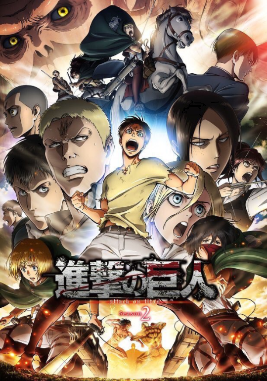
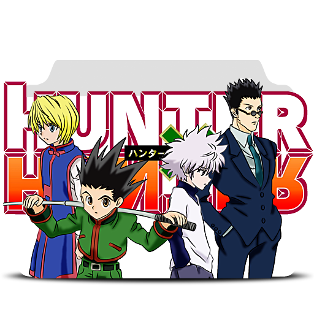
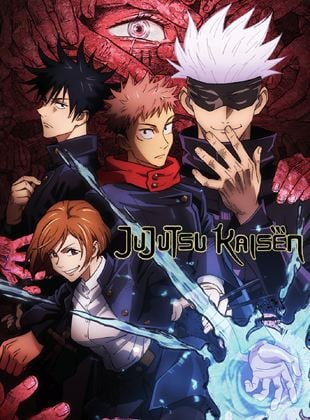
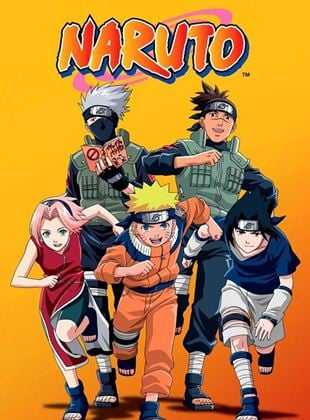
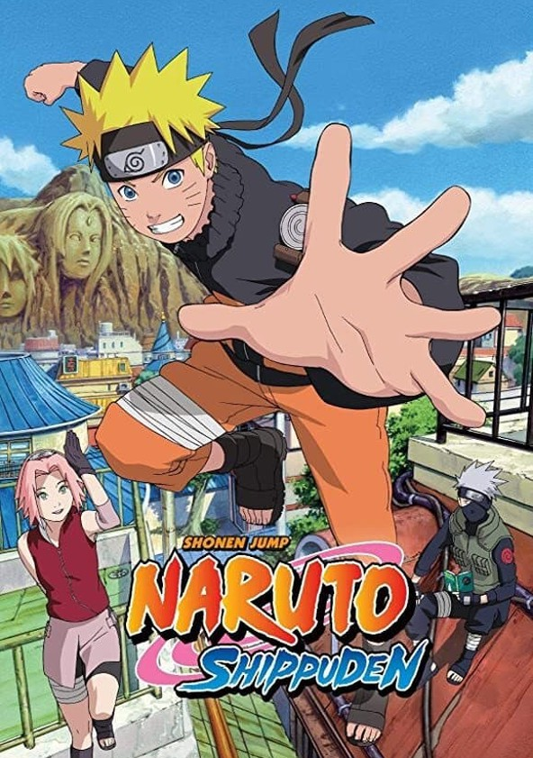

Liste des animés
A-Z
-

Dans un monde où l'humanité vit derrière de gigantesques murs pour se protéger des Titans, des créatures humanoïdes qui dévorent les humains, Eren Yeager, Mikasa Ackerman et Armin Arlert voient leur vie bouleversée lorsqu'un Titan colossal détruit leur ville et cause la mort de la mère d'Eren. Déterminé à éliminer tous les Titans, Eren rejoint l'armée avec ses amis. Ensemble, ils combattent ces monstres et découvrent des vérités choquantes sur l'origine des Titans, l'histoire cachée de leur monde et les véritables intentions des puissances en place. La série explore des thèmes de liberté, de sacrifice et de survie dans un univers impitoyable.
-

Ichigo Kurosaki, un adolescent capable de voir les esprits, voit sa vie transformée lorsqu'il rencontre Rukia Kuchiki, une Shinigami (faucheuse d'âmes) chargée de guider les âmes des défunts et de protéger les vivants des Hollows, des esprits maléfiques. Lors d'une attaque de Hollow, Rukia transmet ses pouvoirs à Ichigo, qui devient alors un Shinigami de substitution. Aux côtés de ses amis, Ichigo affronte des Hollows, découvre des complots au sein de la Soul Society, le monde des Shinigami, et se bat pour protéger ses proches. La série explore des thèmes de devoir, de courage et de rédemption dans un monde où les vivants et les morts coexistent.
-

Light Yagami, un brillant étudiant, découvre un cahier mystérieux appelé le "Death Note" qui lui permet de tuer quiconque en écrivant le nom de la personne dans le carnet, à condition de connaître son visage. En utilisant ce pouvoir pour éliminer les criminels et créer un monde "purifié" sous son nom de dieu, Kira, il se retrouve en conflit avec les forces de l'ordre internationales et un génie du crime connu sous le pseudonyme de L, qui est déterminé à l'arrêter. Alors que la bataille psychologique entre Light et L s'intensifie, les enjeux deviennent de plus en plus élevés et les frontières entre justice et immoralité se brouillent. La série explore les dilemmes moraux et les conséquences du pouvoir absolu.
-

Tanjiro Kamado, un jeune bûcheron, voit sa vie basculer lorsque sa famille est massacrée par des démons, et sa sœur Nezuko est transformée en démon. Déterminé à sauver Nezuko et à venger sa famille, Tanjiro rejoint les Corps des Pourfendeurs de Démons, une organisation dédiée à éliminer ces créatures maléfiques. Entraîné par des maîtres et faisant équipe avec d'autres pourfendeurs, il affronte des démons puissants et découvre les secrets de leur origine. La série mêle aventures épiques, combats intenses et explorations émotionnelles sur la famille, le sacrifice et la rédemption.
-

Après la fin des aventures de Dragon Ball, Goku, désormais adulte et père de famille, se retrouve face à de nouvelles menaces extraterrestres. L'arrivée des Saiyans, guerriers extraterrestres, marque le début d'une série de combats épiques pour protéger la Terre. Goku découvre ses origines Saiyan et se transforme en Super Saiyan pour affronter des adversaires redoutables comme Freezer, Cell et Majin Buu, tout en poursuivant sa quête pour devenir le plus puissant guerrier et défendre ses proches. La série est célèbre pour ses combats intenses, ses transformations spectaculaires et ses thèmes de courage, d'amitié et de dépassement de soi.
-

Gon Freecss, un jeune garçon plein de vie, découvre que son père, qu'il croyait mort, est en réalité un légendaire Hunter, un professionnel spécialisé dans la chasse aux trésors, la découverte de lieux secrets et la résolution de mystères. Déterminé à retrouver son père, Gon passe l'exigeant Examen de Hunter, où il se lie d'amitié avec Killua Zoldyck, un héritier d'une famille d'assassins ; Leorio Paradinight, un aspirant médecin ; et Kurapika, le dernier survivant de son clan vengeur. Ensemble, ils affrontent des épreuves périlleuses, explorent des territoires inconnus et se confrontent à des ennemis puissants, tout en se découvrant et en développant leurs propres capacités. La série explore des thèmes de persévérance, d'amitié et de quête de soi dans un monde riche et complexe.
-

Yuji Itadori, un lycéen ordinaire, se retrouve impliqué dans le monde des arts occultes lorsqu'il ingère un doigt maudit, appartenant à un puissant démon nommé Ryomen Sukuna, pour sauver ses amis d'une attaque de créatures surnaturelles. Cette action fait de lui l'hôte de Sukuna et l'intègre aux Jujutsu Sorcerers, des combattants spécialisés dans l'exorcisme de malédictions et la lutte contre les esprits malfaisants. Sous l'apprentissage de Satoru Gojo, l'un des sorciers les plus puissants, et avec ses nouveaux camarades, Yuji doit maîtriser ses capacités surnaturelles et affronter des malédictions de plus en plus menaçantes tout en cherchant un moyen de libérer son corps de l'influence de Sukuna. La série mêle combats intenses, intrigues mystérieuses et explorations profondes du bien et du mal.
-

Naruto Uzumaki, un jeune ninja orphelin, rêve de devenir le Hokage, le chef de son village, afin de gagner le respect et la reconnaissance de ses concitoyens. Marqué par la présence d'un démon-renard à neuf queues scellé en lui, Naruto lutte contre la solitude et le rejet tout en s'entraînant pour devenir un ninja accompli. Aux côtés de ses amis Sasuke Uchiha et Sakura Haruno, ainsi que de nombreux mentors et adversaires, Naruto affronte des défis périlleux, des complots politiques et des ennemis puissants. Sa quête pour accomplir ses rêves le mène à découvrir des vérités profondes sur son passé, les liens entre les ninjas, et les responsabilités qui viennent avec la puissance. La série explore les thèmes de l'amitié, du courage et de la détermination dans un monde riche en aventures et en mystères.
-

Dans Naruto Shippuden, Naruto Uzumaki revient au village caché de Konoha après deux ans et demi d'entraînement intensif. À présent plus mature et puissant, il reprend sa quête pour ramener son ami Sasuke Uchiha, qui a quitté le village pour acquérir plus de pouvoir et venger sa famille. Pendant ce temps, une organisation secrète et dangereuse, les Akatsuki, cherche à capturer les démons à queues, dont l'un est scellé en Naruto. Naruto et ses alliés doivent affronter des adversaires redoutables, déjouer des complots complexes et résoudre des mystères liés à leur propre passé. La série approfondit les thèmes de l'amitié, de la rédemption et du sacrifice, tout en explorant les ramifications des conflits et des héritages personnels dans un monde en perpétuelle guerre.
-

Luffy, un jeune pirate au corps élastique après avoir mangé un Fruit du Démon, part en quête du légendaire trésor ultime connu sous le nom de "One Piece" pour réaliser son rêve de devenir le Roi des Pirates. Accompagné de son équipage diversifié, comprenant l'épéiste Roronoa Zoro, la navigatrice Nami, le tireur d'élite Usopp, le médecin Chopper, la cuisinière Sanji, la chanteuse Robin, le charpentier Franky et le cyborg Brook, Luffy navigue à travers une mer remplie de dangers et de mystères. L'équipage affronte des ennemis redoutables, découvre des îles fascinantes, et explore des intrigues politiques et des légendes anciennes. La série célèbre l'aventure, l'amitié et la poursuite des rêves dans un monde vaste et riche en imaginaire.